The first hour on a new subnet
Walk in with written approval, read the live adapter, and come back with hostnames, manufacturers, and open ports — each finding tied to the observation that raised it.
Insider tester builds · Citadel Cyber Guardian
Citadel Audit is the desktop app a consultant carries into the room. It discovers the devices on a network you are authorized to scan, maps what it actually observed to CMMC, NIST SP 800-171, SOC 2, and AI-governance references, and signs the evidence before you leave.
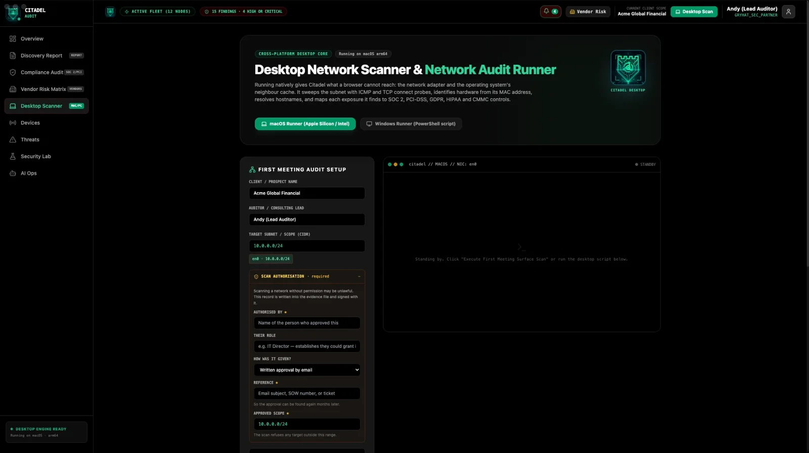
Who it's for
Citadel Audit is a meeting instrument, not a certification. It gives you an inventory and a cited finding while you are still on site.
Walk in with written approval, read the live adapter, and come back with hostnames, manufacturers, and open ports — each finding tied to the observation that raised it.
Nothing is installed on the client's machines and nothing is authenticated to. You see what is reachable from the segment you were allowed onto. You do not see traffic, and you do not claim a breach.
Findings can cite CMMC 2.0 practices drawn from NIST SP 800-171, plus SOC 2 criteria. That is evidence for a readiness program. An assessor still decides pass or fail.
What it does
Discovery runs on the consultant laptop. The app reads the operating system's neighbour cache, sweeps with ICMP, and falls back to TCP for hosts that stay silent. Manufacturer names come from the IEEE assignment. Equipment from entities named in NDAA Section 889 is flagged by registered organization, not by a guess.
Screens from the 2.0.0 build
These are screens from the shipped desktop build on macOS and Linux, captured on our own lab network. Use the chapters to move through the job. Keyboard left and right work once a chapter has focus.
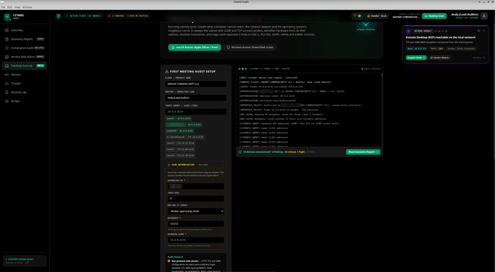
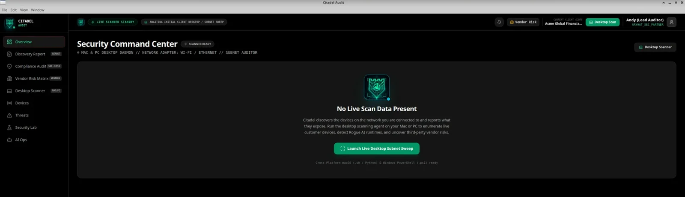
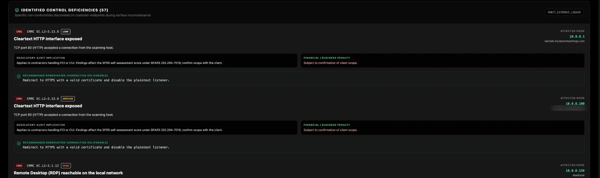
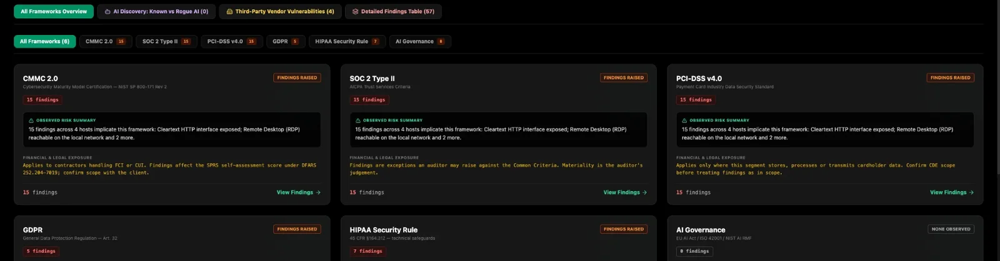
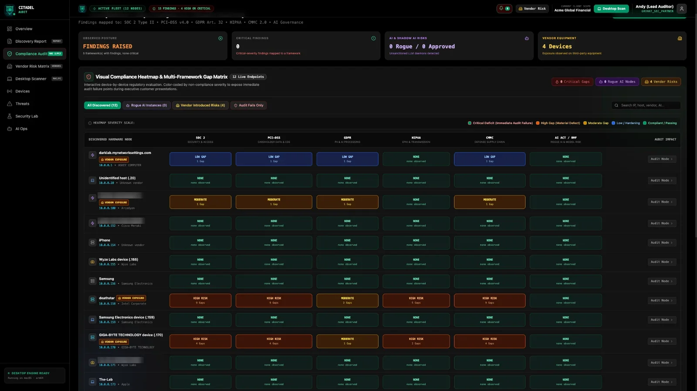
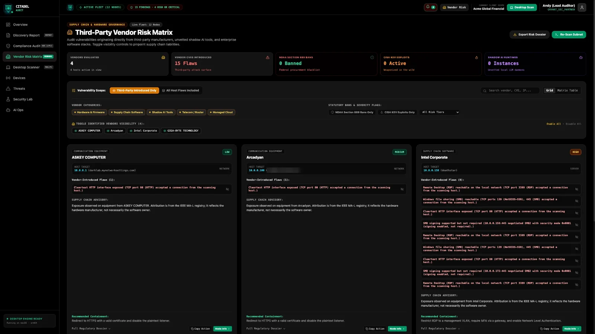
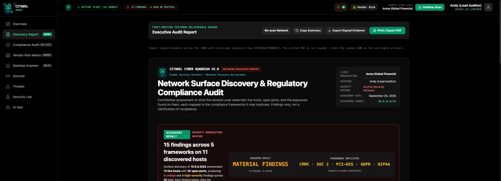
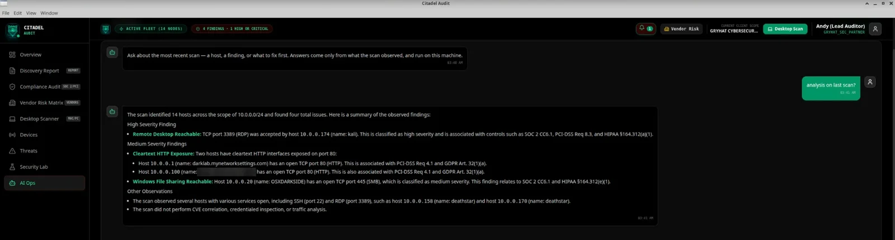
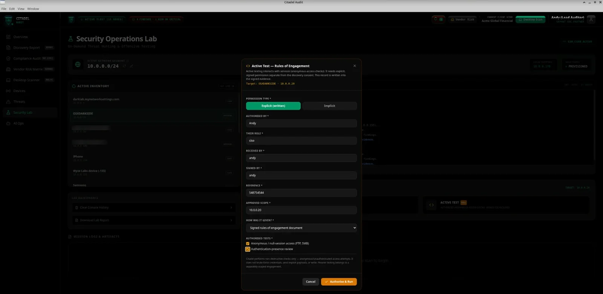
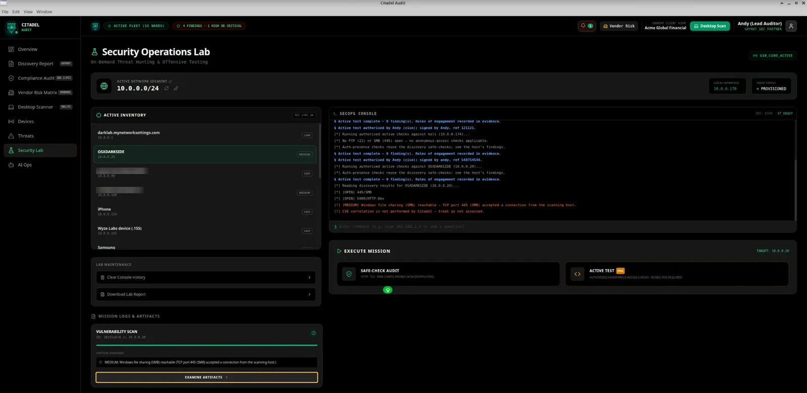
How a test run works
macOS and Linux are verified. Windows is an experimental preview and is untested. Binaries live on GitHub Releases, not in this repository.
Tester builds open on an activation screen. Copy the Machine ID shown there — the machine serial this install is bound to.
Email the request to GRYHAT. Do not put the Machine ID in a GitHub issue. Activation is checked on the machine and works without a license server.
Name the approver, their role, how they approved it, and the range. The app refuses a target outside that range, before a packet is sent.
Each row names the exposure and the control it implicates. Unknown hardware stays unknown. A scan that enumerates nothing is a failure, not a clean network.
Verify the export later with minisign and the public key that ships with it. You do not need a GRYHAT account, and you do not need the app.
Privacy
Discovery and the on-device model both run locally. There is no cloud SDK to call home, and a non-private model endpoint is refused. Assets are bundled, so the app renders the same way on an isolated segment.
A key is signed, bound to the machine serial, and verified locally against an embedded public key. Tampered or expired licenses are rejected. Air-gapped activation is the normal path.
Observed or absent. An unattributable address stays unknown. An empty vulnerability list means not assessed, never "none present." The scanning machine stays in the inventory and raises no findings against you, and that exclusion is recorded.
Bug reports belong in GitHub issues. Client addresses, hostnames, evidence files, and license keys do not. If a screenshot would show someone else's environment, describe the behavior instead.
Published lab note, build 2.0.0: a /24 sweep completed in about fifteen seconds, with zero outbound connections by design. Your segment will differ. Two platforms are verified on real hardware — macOS and Linux.
Download
This repository does not contain the application, and it does not contain binaries. When a build is posted, it is an asset on the Releases page. If that page is empty, a tester build has not been published yet — the Machine ID only exists after you install one.
Universal DMG for the 2.0.0 line. Shipped macOS builds are Developer ID signed and notarized, and have been run on real hardware.
AppImage and .deb for x64 and arm64. A full scan was verified on Ubuntu 26.04 (x64). Other distributions are not claimed.
chmod +x the file and run it. Some desktops need FUSE installed before an AppImage will start.sudo apt install ./the-package.deb from the folder that contains the download.Windows is untested. A live scan has not been verified. Treat any Windows build as a preview, not as a platform you can deliver an audit from.
You need a machine that is actually on the subnet you were allowed to scan. Internet is not required to activate a key or to run discovery. The on-device model ships inside the app, so the installer is a full desktop build, not a thin client. Exact disk and OS minimums are whatever the posted Release names — this page will not invent them.
Limits
No CVE correlation. An empty vulnerability list means the question was not asked.
Nothing is installed on the hosts you discover, and nothing logs in.
No cloud or SaaS estate. One approved range per scan.
Safe-checks observe a service's own response. Pro active tests try anonymous access only, under a separate signed rules of engagement. No brute force, no exploit payloads, no writes.
Citadel reports what a host exposes on the segment. It does not detect a breach, and it does not watch traffic.
A mapping is not a SOC 2 report and not a CMMC certificate. IAiGACB is named only as alignment. An accredited assessor or a licensed CPA firm is who attests.
Thirty-three audit-relevant ports sit behind ten rules in the 2.0.0 build. Ports 5000 and 8000 are deliberately not treated as AI services: on macOS, 5000 is AirPlay, and flagging it would be a false finding. A shortened map:
| Exposure | Why it is listed | Rating on the segment |
|---|---|---|
| Telnet | Credentials cross the network in cleartext. | Critical |
| Open datastores | Redis, MongoDB, Elasticsearch, and Memcached have a history of defaulting to no authentication. | Critical |
| NDAA Section 889 vendor | The registered manufacturer matches a covered entity (FAR 52.204-25). | Critical |
| FTP, RDP, VNC, databases | Cleartext admin, a common ransomware door, weak remote screens, or a data store reachable from a general segment. | High |
| Shadow AI | Ollama, ComfyUI, Gradio, or LM Studio on a distinctive port. Uninventoried. Aligned with IAiGACB. | High |
| SMB and cleartext admin | Lateral movement and management over HTTP. HTTP on the gateway is rated lower than HTTP on a workstation. | Medium or Low |
One next step
Keys are machine-bound. The request asks for your name, company, email, OS, and the Machine ID from the activation screen. It opens an email to andy@gryhat.com. It does not open a public issue.